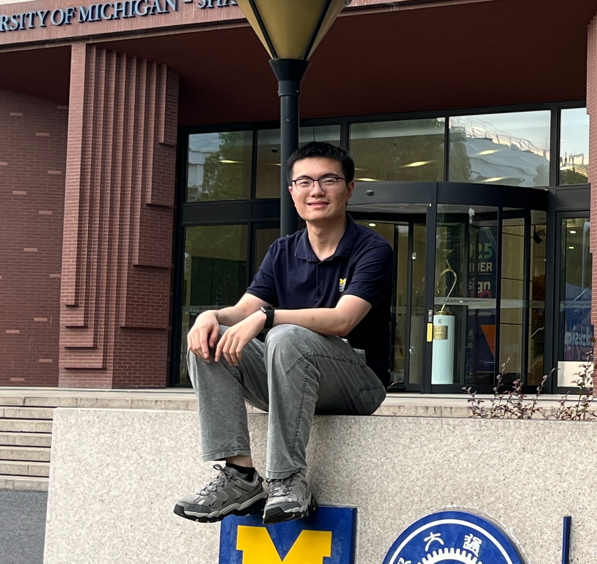

密西根大学信息科学在读硕士
上海交通大学浦江国际学院电子与计算机工程在读本科生
专注于计算机视觉 (CV)、前后端开发及 AR/VR 开发领域。
信息科学硕士
2025.08 - 2027.04 (expected)
工学学士，电子与计算机工程
2022.08 - 2026.08 (expected)
基于多视图图像的 3D 指纹重建与识别研究
自动驾驶场景重建
开发了一个类 Instagram 的全栈 Web 应用，实现了用户认证、照片上传、关注与点赞等核心功能；并使用 Flask 模板与 JavaScript 构建动态前端页面。
面向 Meta Quest 平台设计并开发沉浸式 VR 高尔夫游戏，重点实现基于物理的交互体验；为玩家提供多视角切换与场景导航功能。
基于 Rellis-3D 数据集的 LiDAR 点云数据生成语义地图，并实现基于 SegFormer 的语义分割方法，用于计算机视觉场景应用。
使用积分质量增强（IME）方法开发大气甲烷通量反演系统，整合 ERA5 再分析数据（气压、温度、10m 风场分量）以量化区域源甲烷排放，并结合风速变化与羽流识别误差实现空间插值与不确定性评估。
为大学生设计了综合型应用原型，包含基于交通条件的采购辅助、简易预算工具，以及面向学生场景的 AI 烹饪指导；并在设计全流程中主导了 UX 研究、原型制作与用户测试。
留言区
欢迎留言，留言会在管理员审核通过后显示。
管理员登录 →